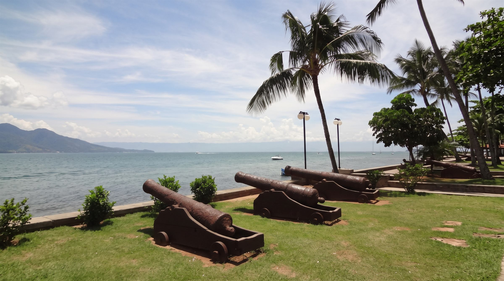

Rede Litoral Norte Sustentável
Juntos pelo desenvolvimento sustentável do Litoral Norte
Somos uma rede de organizações da sociedade civil, movimentos sociais e cidadãos de Caraguatatuba, Ilhabela, São Sebastião e Ubatuba. Mobilizamos esforços e dados para um diálogo socioambiental aberto, horizontal e democrático.
Comprometida com os Objetivos de Desenvolvimento Sustentável
Observatório do Desenvolvimento Sustentável
Os dados do Litoral Norte em um só lugar
Indicadores de orçamento, saúde, educação, saneamento, clima e governança dos quatro municípios, conectados às fontes oficiais e organizados pelos 17 ODS da Agenda 2030.
- Painéis interativos que abrem aqui mesmo no site
- Links diretos para IBGE, TCE-SP, Seade, SINISA e outras fontes oficiais
- Orçamento municipal com dados oficiais atualizados
Temas
Abrir o Observatório
Explore por tema
Municípios
Quatro cidades, uma região
População estimada mais recente de cada município, direto da base do IBGE.
Fonte: IBGE — Estimativas da população.
Faça parte da Rede
A participação é aberta a organizações da sociedade civil, movimentos sociais, iniciativas cidadãs e cidadãos interessados no desenvolvimento sustentável do Litoral Norte.